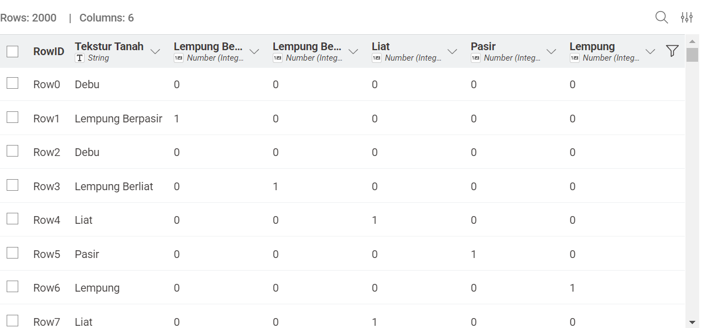
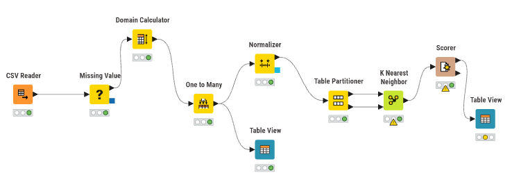
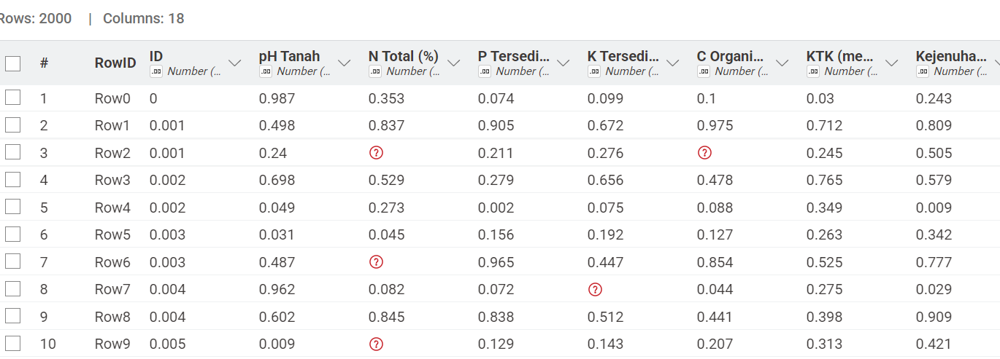
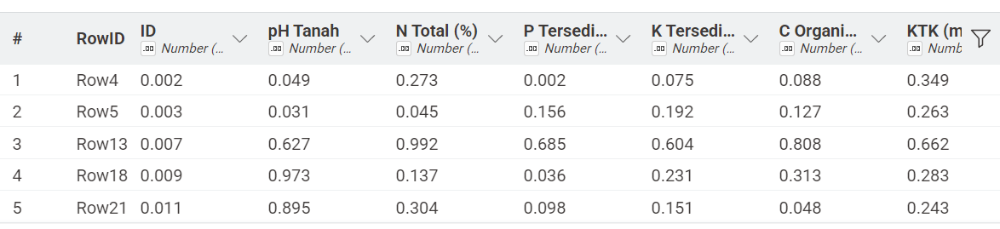
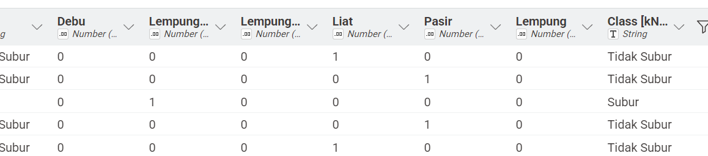
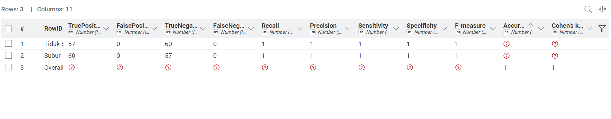
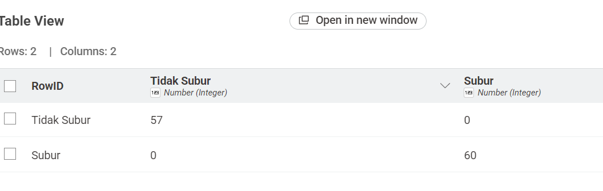

UTS-DATASET KLASIFIKASI KESUBURAN TANAH#
Dataset Kesuburan Tanah#
Dataset ini berisi 2.000 sampel data tanah yang digunakan untuk mengklasifikasikan apakah kondisi tanah masuk dalam kategori Subur atau Tidak Subur berdasarkan 10 fitur agronomis. Analisis ini menggunakan algoritma K-Nearest Neighbors (KNN) untuk menentukan kelas tanah berdasarkan kedekatan jarak antar fitur.
Atribut Yang Digunakan#
Atribut |
Tipe Data |
Keterangan |
|---|---|---|
pH Tanah |
Numerik |
Skala keasaman tanah (0–14) |
N Total |
Numerik |
Kandungan Nitrogen dalam persen (%) |
P Tersedia |
Numerik |
Kandungan Fosfor dalam ppm |
Tekstur Tanah |
Kategorikal |
Lempung, Pasir, Debu, dll. |
C-Organik |
Numerik |
Kandungan karbon organik (%) |
K Tersedia |
Numerik |
Kandungan Kalium dalam ppm |
Kelembapan |
Numerik |
Tingkat kelembapan tanah (%) |
Suhu Tanah |
Numerik |
Suhu tanah dalam derajat Celcius (°C) |
Drainase |
Kategorikal |
Baik, Sedang, Buruk |
Kedalaman Tanah |
Numerik |
Kedalaman efektif tanah (cm) |
Label |
Target |
Subur / Tidak Subur |
Transformasi Data Numerik (Min-Max)#
Sebelum menghitung jarak, data numerik harus disamakan skalanya menggunakan Min-Max Normalization agar berada pada rentang 0 sampai 1.
Rumus Min-Max#
Contoh Perhitungan Manual (Data 1 vs Data 2)#
Atribut: pH Tanah
Data 1 (\(x_1\)) = 8.93
Data 2 (\(x_2\)) = 6.24
Nilai minimum (\(x_{min}\)) = 3.50
Nilai maksimum (\(x_{max}\)) = 9.00
Normalisasi Data 1: $\( z_1 = \frac{8.93 - 3.50}{9.00 - 3.50} = \frac{5.43}{5.50} = 0.987 \)$
Normalisasi Data 2: $\( z_2 = \frac{6.24 - 3.50}{9.00 - 3.50} = \frac{2.74}{5.50} = 0.498 \)$
Transformasi Data Kategorikal#
Untuk atribut Tekstur Tanah, digunakan metode One-Hot Encoding (One to Many).
Karena algoritma KNN berbasis jarak numerik, maka data kategorikal diubah menjadi nilai biner (0 atau 1):
Jika tekstur sama → jarak = 0
Jika tekstur berbeda → jarak = 1
Contoh:
Debu → (1, 0, 0)
Lempung → (0, 1, 0)

Perhitungan Jarak Euclidean#
Setelah semua data ditransformasi ke dalam bentuk numerik (0–1), jarak antar data dihitung menggunakan Euclidean Distance.
Rumus Euclidean#
Contoh Tabel Hasil Normalisasi#
Data |
pH (Norm) |
N Total (Norm) |
Tekstur (Biner) |
… |
|---|---|---|---|---|
Data 1 |
0.987 |
0.150 |
1 (Debu) |
… |
Data 2 |
0.498 |
0.420 |
0 (Lempung) |
… |
Perhitungan Jarak#
Implementasi Knime#
Bagian ini menjelaskan rangkaian proses data mining yang dilakukan menggunakan KNIME. Setiap node memiliki peran spesifik dalam mentransformasi data mentah menjadi hasil klasifikasi yang akurat.

Alur Kerja (Workflow) Node#
Node |
Kegunaan |
Output / Hasil |
|---|---|---|
CSV Reader |
Membaca file dataset uts-dataset-kesuburan.csv. |
Data tabel mentah (Raw Data) |
Missing Value |
Mengidentifikasi dan mengisi nilai kosong agar tidak mengganggu proses analisis. |
Dataset bersih tanpa nilai null |
One to Many |
Melakukan One-Hot Encoding pada kolom Tekstur Tanah. |
Fitur kategorikal menjadi numerik (biner) |
Normalizer |
Menerapkan Min-Max Normalization (0–1). |
Data dengan skala seragam |
Partitioning |
Membagi data menjadi 80% training dan 20% testing. |
Data Train (1600) & Data Test (400) |
K-Nearest Neighbor |
Menghitung jarak Euclidean dan klasifikasi dengan \(k=5\). |
Tabel prediksi (Actual vs Predicted) |
Scorer |
Mengevaluasi hasil prediksi model. |
Metrik evaluasi & Confusion Matrix |
Detail Output Node Utama#
A. Node Normalizer (Min-Max)#
Node ini penting agar atribut dengan skala besar (misalnya P Tersedia) tidak mendominasi atribut kecil (seperti pH).
Rumus Min-Max#
Hasil:
Seluruh fitur numerik berada pada rentang 0–1 sehingga memiliki bobot yang setara dalam perhitungan jarak.

B. Node KNN#
Pada node ini mengatur Number of neighbors to consider sebanyak 5
Berikut hasil dari consider 5


C. Node Scorer (Metrik Evaluasi)#
Node ini menghasilkan metrik evaluasi untuk mengukur performa model KNN.
Metrik evaluasi pada node Scorer diperoleh berdasarkan konsep Confusion Matrix dalam machine learning. Nilai Accuracy, Precision, Recall, dan F1-Score dihitung menggunakan rumus standar yang berasal dari kombinasi True Positive (TP), True Negative (TN), False Positive (FP), dan False Negative (FN).
Mendapatkan hasil 100% dan akurat

Dari semua implementasi yang telah dijalankann, di dapatkan Score dari label Subur dan Tidak Subur dengan partisi 90% data Training dan 10% Data Testing
